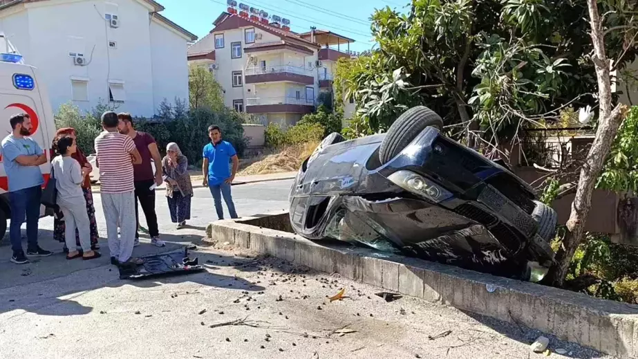
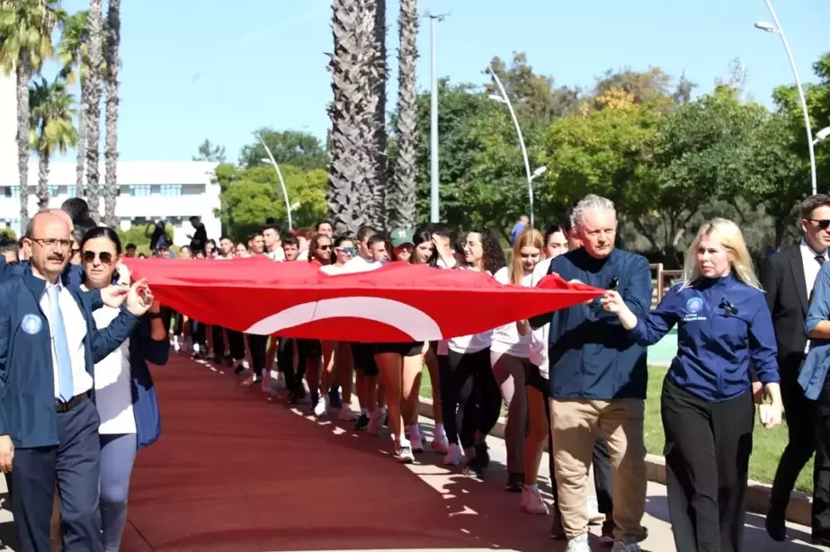
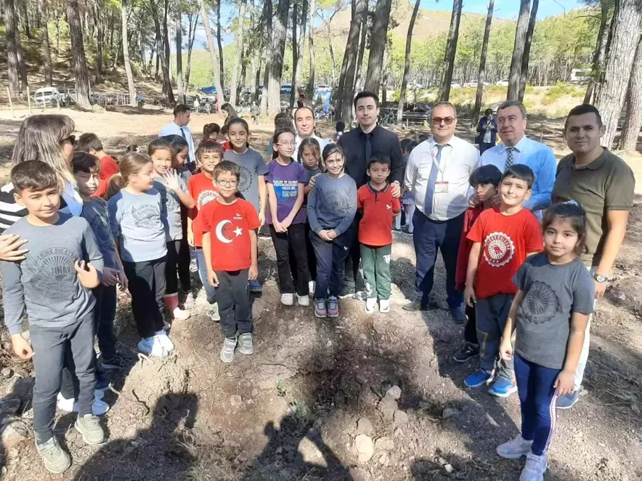

| Anasayfa | İlçeler | Tarihi | Tarihi Yerler | Hakkımızda | İletişim |
| Anasayfa |
| İlçeler |
| Tarihi |
| Tarihi Yerler |
| Hakkımızda |
| İletişim |
| Antalya'da Otomobil İstinat Duvarına Çarptı | |
|  | Antalya'nın Manavgat ilçesinde sürücüsünün direksiyon hakimiyetini kaybetmesi sonucu otomobil istinat duvarına çarparak ters döndü. Olay anı güvenlik kamerasına yakalandı. Antalya'da istinat duvarına çarpan otomobil, bahçe duvarında ters dönerek asılı kaldı. O anlar güvenlik kamerasına anbean yansıdı. |
| Rektör Özkan TUSAŞ'a başsağlığı diledi | |
|  | Akdeniz Üniversitesi Rektörü Prof. Dr. Özlenen Özkan, kampüste bulunan TUSAŞ Milli Muharip Uçak Ar-Ge ve Tasarım Merkezini ziyaret ederek başsağlığı diledi. Akdeniz Üniversitesi Rektörü Prof. Dr. Özlenen Özkan, kampüste bulunan TUSAŞ Milli Muharip Uçak Ar-Ge ve Tasarım Merkezini ziyaret ederek başsağlığı diledi. Ziyaret sonrası akademisyen ve öğrencilerin katıldığı dev Türk bayraklarıyla yürüyüş düzenlendi. |
| Kumluca'da Cumhuriyet'in 101. Yılı İçin Fidan Dikme Etkinliği Düzenlendi | |
|  | Antalya'nın Kumluca ilçesinde, Cumhuriyet'in 101. yılı etkinlikleri kapsamında düzenlenen fidan dikme etkinliğine mahalle halkı ve öğrenciler katıldı. 5 bin metrekarelik alana 200 fıstıkçamı, 100 harnup, 50 defne ve 100 servi fidanı dikildi. Antalya'nın Kumluca ilçesinde, Cumhuriyet'in 101. yılı etkinlikleri kapsamında fidan dikme etkinliği düzenlendi. |